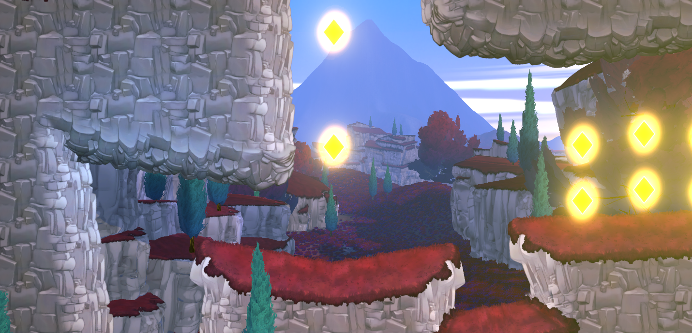

One of my tasks in this project was to make the animation smoother and blend in better. The game is supposed to be snappy and i think i delivered in my task to make snappy animations.
Here you can see the animation tree in unity
For this project we used Unity as our main engine. The models were made in Blender and animations for the player were made in Adobe Animate, Blender and finished up in Unity
Game-Engine
3D Modeling Software
Animation Software
Projects' code editor
Looking back at working on this game for 10 weeks i really enjoyed working on it with the entire team. Developing several Game mechanics that i accually wanted to make instead of getting a mechanic assigned to make was really nice because of the freedom
Finally here is a short video on what the project currently looks like. It shows the movement of the character the attack/shooting and the special attack (the repel sphere). I hope you enjoy watching.